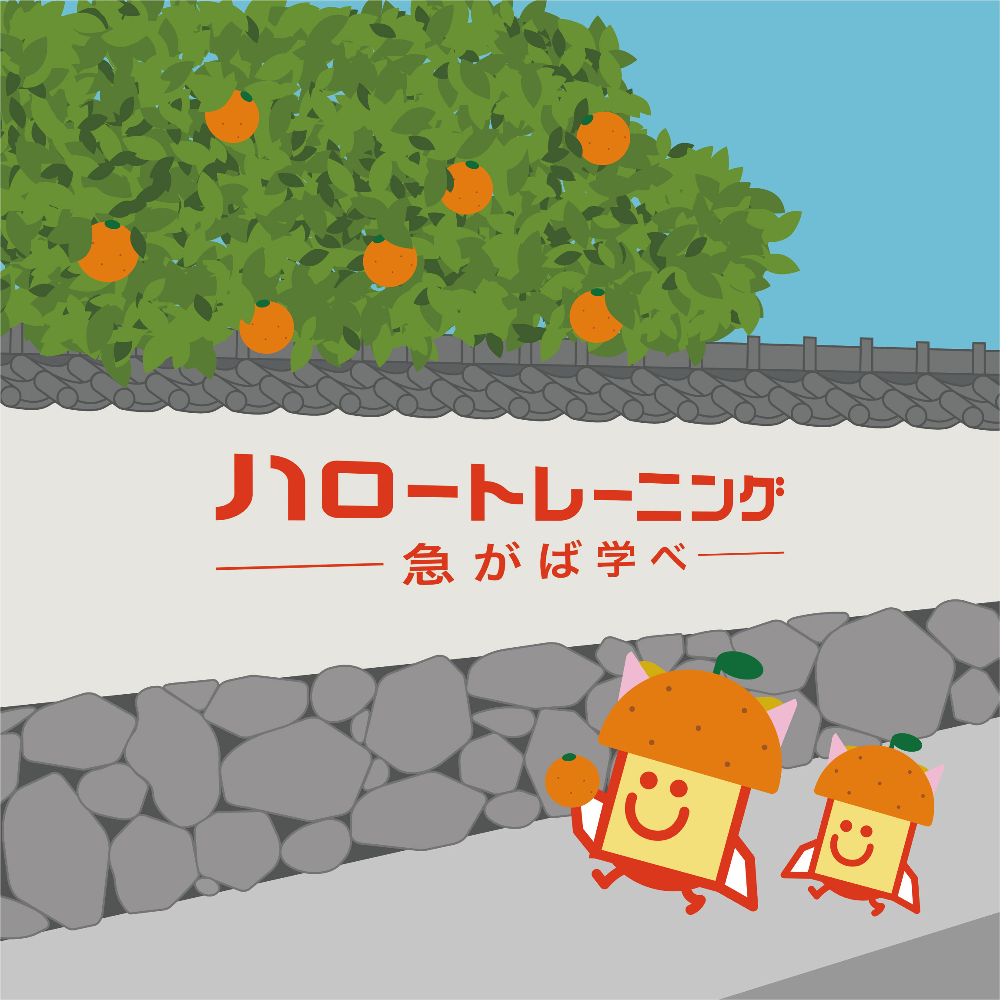

採用作品「実るまちで繋がる暮らし」
厚生労働省山口労働局ハロートレーニングポスターデザインコンテスト
ハロトレくんと山口県の風景イラスト部門 優秀賞（山口労働局職業安定部長賞）受賞

Overview
- 課題制作 制作全般
- 制作時期：2026年 1月
- 使用ツール：Illustrator
Concept
本作品は、萩の特産品である夏みかんをテーマに、地域の風景と日常の一場面を表現しました。 塀越しに実る夏みかんの木は、萩のまちに根づいた歴史や文化、そして人々の暮らしとの結びつきを象徴しています。 また、道を歩くハロトレくんの姿には、働くことや学ぶことが特別なものではなく、日常の延長線上にあるという思いを込めました。 この作品を通じて、夏みかんが働くことを通じてまちの魅力となり観光や交流へとつながっていることを感じてもらえたら嬉しいです。